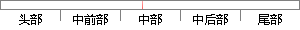

这里优先级号采用整数来表示，0为最高优先级，数字越大，优先级越低。
片段位置图

相似结果
相似片段：其中最高优先级任务的查找是通过建立就绪任务表来...需要提供信息发布的功能,这里更适合于采用 B/S ...数字 0 表示任务的优先级最高,数字越大则表示任务...
| 标题 | 《面向制造设备的嵌入式Agent技术的研究和开发》 |
| 对比库 | 中国学位论文全文数据库 |
| 作者 | 姚明明 |
| 机构 | 华中科技大学 |
| 分类 | 机械制造及其自动化 |
| 年份 | 2007 |
| 相似率 | 91.3% （严重抄袭） |
※ 片段修改建议 ※
近似词参考：- 表示：暗示 默示 示意 透露表现 表现
- 数字：练习
- 采用：采取 接纳 采纳
系统自动生成语句：这里优先级号采取整数来暗示，0为最高优先级，练习越大，优先级越低。
注：本片段修改建议为系统自动生成，仅供参考。